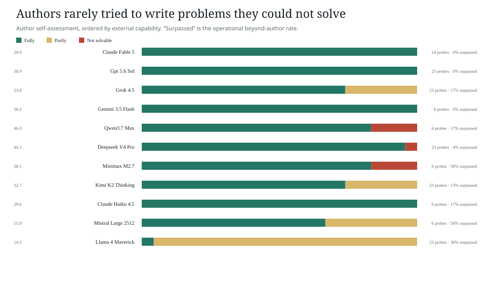

Methods appendix
How stable are these results?
The broad signal survives new probe batteries and answer orders. Exact frontier ranks do not. This page collects the checks that keep the headline claims narrow.
Reference sensitivity
The weak estimated anchors make the result look slightly easier
The primary endpoint excludes three estimated lower-tail scores. Adding them raises accuracy by roughly two points because they are easy to distinguish; they do not create the 86.4% result.
| Judge | Direct models | Direct accuracy | All models | With estimates |
|---|---|---|---|---|
| Sol | 47 | 84.6% | 50 | 86.4% |
| Fable | 47 | 88.2% | 50 | 89.5% |
Replication
Broad accuracy repeats; the top five moves
| Judge | Earlier 5-probe battery | Fresh 10-probe battery | Rank tau | Top-five overlap |
|---|---|---|---|---|
| Fable | 84.6% | 88.2% | 0.85 | 80% |
| Sol | 80.9% | 84.6% | 0.78 | 60% |
Mean old-new rank agreement is Kendall 0.81; mean top-five overlap is 70%. This supports a capability ladder, not a definitive frontier league table.
Answer order
Changing presentation order moves individual models
The catalog replay used identical probes and answers in a new order. Accuracy moved from 86.7% to 83.7%; median model displacement was 1.5 places. A few models moved much farther.
What varies?
The evidence battery matters more than the interpreter
When both judges saw the same answers, their final rankings agreed at Kendall 0.84 and 0.77. Holding the judge fixed while changing its probe battery produced lower agreement: 0.67 for Sol and 0.60 for Fable. This crossed control isolates question choice from evidence interpretation.
Evidence budget
Follow-ups do not reliably improve the ranking
Across 30 oversight panels, one follow-up improved 10 rankings, left 11 unchanged, and worsened 9. Extra evidence remains a checkpoint, not an automatic improvement.
Uncertainty
The apparent judge-capability effect is not causal
| Judge capability band | Standardized rate | Panel-bootstrap 95% interval | Panels |
|---|---|---|---|
| Lower Third | 48.0% | 25.5%–69.7% | 12 |
| Middle Third | 60.1% | 43.3%–75.1% | 9 |
| Upper Third | 85.8% | 68.6%–96.9% | 9 |
Recognition rises across the observed bands, but judge identity, provider, panel, and probe battery remain entangled. The intervals preserve panel-level variation rather than treating every candidate comparison as independent.
Probe self-assessment
Models usually wrote questions they believed they could answer

Operational integrity
Missing evidence is recorded, never scored as low intelligence
The fresh catalog replication records 1 unavailable opening answer out of 1000, and 3 unavailable adaptive answers out of 40. The pooled oversight study retains 7 unavailable cells out of 1345 (0.5%); the matched extension has none. Repairs reuse completed evidence and preserve exact lineage.
Council scope
The council result is promising and composition-specific
A fixed three-member council improved ordinary evidence from 64.6% to 70.1%. On verifier-oriented evidence it moved from 72.2% to 75.0%. The interaction was -2.8%, offering no evidence that the two interventions reinforce one another.